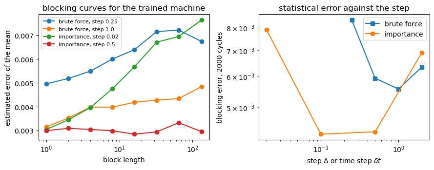
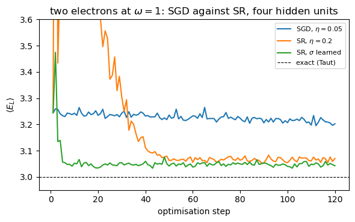
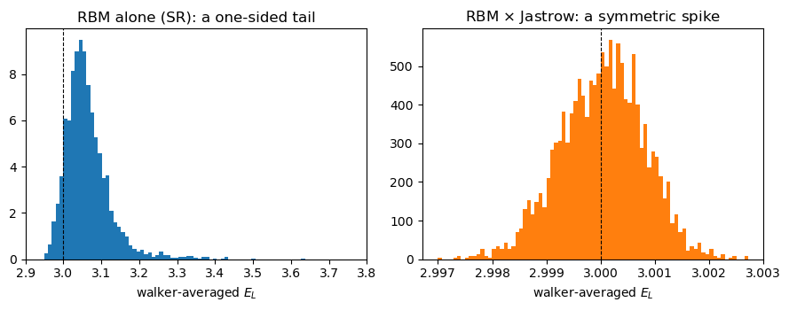

Project 5: neural quantum states for the quantum dot, from the Boltzmann machine to a physics-informed ansatz#
Companion notebook to Appendix A, Project 5, of Quantum mechanics for
many-particle systems. The code is the same as in
BookManybody/BookPrograms/appendixA/nqs.py, which extends the
NeuralQuantumState class of the chapter-17 program rbm.py and uses the
blocking of the chapter-14 program vmcoptimise.py; the notebook runs it
section by section.
The wave function of two electrons in a two-dimensional harmonic trap at \(\omega=1\) is represented by the square root of the marginal distribution of a Gaussian-binary restricted Boltzmann machine – Carleo and Troyer’s neural quantum state – and optimised by variational Monte Carlo. The project builds the code in the order of chapters 13, 14 and 17: the analytic derivatives, brute-force and importance-sampled Metropolis, gradient descent and stochastic reconfiguration, the blocking analysis, and finally the interaction, where Taut’s exact energy of \(3\) a.u. is the target. It ends where chapter 18 begins: with the cusp put into the ansatz by hand.
import sys, os, glob, time
import numpy as np
import matplotlib.pyplot as plt
for _pattern in ("chapter*", "appendix*"):
for _d in sorted(glob.glob(os.path.join("..", "BookManybody",
"BookPrograms", _pattern))):
if _d not in sys.path:
sys.path.insert(0, _d)
import nqs
from vmcoptimise import blocking, blocking_curve
np.set_printoptions(precision=6, suppress=True, linewidth=120)
1. The ansatz and its derivatives#
With \(M=PD\) visible units \(x_m\) (the coordinates), \(N\) hidden units, and \(Q_n=b_n+\sum_m x_mw_{mn}/\sigma^2\), the neural quantum state of chapter 17 is
the square root of the RBM marginal, so that \(|\Psi|^2\) is itself an RBM distribution. The local energy needs \(\partial_m\ln\Psi\) and \(\partial_m^2\ln\Psi\), and the optimiser needs \(O_k=\partial\ln\Psi/\partial\theta_k\) for every parameter \(\theta=(\mathbf a,\mathbf b,\mathbf W)\) – and, in this project, also for the width \(\sigma\) and for the parameter \(\beta\) of an optional Padé-Jastrow factor \(\exp[r_{12}/(1+\beta r_{12})]\). Every one of these is checked against finite differences before anything else is run, and Taut’s exact state is used as the ultimate test of the local energy: its \(E_L\) must be exactly \(3\) everywhere.
for key, (dp, de) in nqs.check_derivatives().items():
print(f"jastrow={key[0]!s:5s} learn_sigma={key[1]!s:5s}: "
f"max |O_analytic - O_fd| = {dp:.1e}, max |E_L analytic - fd| = {de:.1e}")
e = nqs.taut_local_energy()
print(f"Taut's exact state: E_L = {e.mean():.12f} with spread {e.std():.1e} over {len(e)} random points")
psi = nqs.ProjectNQS(n_hidden=4, jastrow=True, learn_sigma=True)
print("parameters:", psi.n_parameters, "=", ", ".join(psi.parameter_names()[:6]), "...,", ", ".join(psi.parameter_names()[-2:]))
jastrow=False learn_sigma=False: max |O_analytic - O_fd| = 2.5e-10, max |E_L analytic - fd| = 1.1e-07
jastrow=True learn_sigma=False: max |O_analytic - O_fd| = 2.5e-10, max |E_L analytic - fd| = 1.1e-07
jastrow=True learn_sigma=True : max |O_analytic - O_fd| = 4.9e-10, max |E_L analytic - fd| = 1.1e-07
Taut's exact state: E_L = 3.000000000000 with spread 4.1e-16 over 2000 random points
parameters: 26 = a0, a1, a2, a3, b0, b1 ..., beta, sigma
3. Sampling: brute force against importance sampling#
The samplers of chapter 13 are both implemented for the machine: a symmetric uniform step of size \(\Delta\) accepted with \(|\Psi'/\Psi|^2\), and the Langevin move with the quantum force \(\mathbf F=2\nabla\ln\Psi\) and time step \(\delta t\) accepted with the Metropolis-Hastings ratio. We train one interacting machine (\(N=4\) hidden units) and then compare the two samplers on it: the acceptance rate, and – the quantity that matters – the statistical error of the energy from the blocking analysis of chapter 14 for the same number of Monte Carlo cycles.
machine = nqs.ProjectNQS(n_hidden=4, rng=np.random.default_rng(11))
t0 = time.time()
hist_sgd = machine.train("sgd", learning_rate=0.05, max_iter=120, n_cycles=300, n_walkers=200)
print(f"trained in {time.time() - t0:.0f} s; last energy estimate {hist_sgd[-1][1]:.5f}")
theta_sgd = machine.get_theta().copy()
rows = []
print(f"{'sampler':>12s} {'step':>6s} {'acceptance':>11s} {'E':>10s} {'error':>9s} {'var(E_L)':>9s}")
for step in (0.25, 0.5, 1.0, 2.0):
r = machine.production(n_cycles=2000, n_walkers=200, sampler="brute", step=step)
rows.append(("brute force", step, r["acceptance"], r["energy"], r["error"], r["variance"], r["samples"]))
print(f"{'brute force':>12s} {step:6.2f} {r['acceptance']:11.3f} {r['energy']:10.5f} {r['error']:9.5f} {r['variance']:9.3f}")
for dt in (0.02, 0.1, 0.5, 2.0):
r = machine.production(n_cycles=2000, n_walkers=200, sampler="importance", time_step=dt)
rows.append(("importance", dt, r["acceptance"], r["energy"], r["error"], r["variance"], r["samples"]))
print(f"{'importance':>12s} {dt:6.2f} {r['acceptance']:11.3f} {r['energy']:10.5f} {r['error']:9.5f} {r['variance']:9.3f}")
trained in 19 s; last energy estimate 3.20245
sampler step acceptance E error var(E_L)
brute force 0.25 0.894 3.22051 0.00837 10.132
brute force 0.50 0.791 3.20645 0.00593 3.794
brute force 1.00 0.601 3.21040 0.00556 4.056
brute force 2.00 0.324 3.21186 0.00634 3.755
importance 0.02 0.999 3.20480 0.00790 3.727
importance 0.10 0.989 3.20424 0.00426 2.940
importance 0.50 0.882 3.20750 0.00432 3.597
importance 2.00 0.312 3.20622 0.00690 3.353
fig, axes = plt.subplots(1, 2, figsize=(9.0, 3.6))
for name, step, acc, E, err, var, samples in rows:
if (name == "brute force" and step in (0.25, 1.0)) or (name == "importance" and step in (0.02, 0.5)):
curve = np.array(blocking_curve(samples))
axes[0].semilogx(len(samples) / curve[:, 0], curve[:, 1], "o-",
label=f"{name}, step {step}")
axes[0].set_xlabel("block length")
axes[0].set_ylabel("estimated error of the mean")
axes[0].set_title("blocking curves for the trained machine")
axes[0].legend(fontsize=8)
for name, marker in (("brute force", "s"), ("importance", "o")):
sel = [(step, err) for n, step, acc, E, err, var, s in rows if n == name]
axes[1].loglog([s for s, _ in sel], [e for _, e in sel], marker + "-", label=name)
axes[1].set_xlabel(r"step $\Delta$ or time step $\delta t$")
axes[1].set_ylabel("blocking error, 2000 cycles")
axes[1].set_title("statistical error against the step")
axes[1].legend()
plt.tight_layout()
plt.show()

Both samplers give the same energy within the error, as they must – they sample the same \(|\Psi|^2\) – but not with the same efficiency. The brute-force walk has a best step, where the acceptance is around one half; the importance-sampled walk keeps its acceptance near one and its error smaller over a wide range of time steps, because the drift term moves the walkers where the wave function is large instead of waiting for them to diffuse there. The blocking curves show the same thing: the plateau is reached after fewer transformations, so the correlation time is shorter.
4. Optimisation: gradient descent against stochastic reconfiguration#
The gradient of the energy is the covariance of chapter 14, \(\partial_kE=2\big(\langle E_LO_k\rangle-\langle E_L\rangle\langle O_k\rangle\big)\). Plain gradient descent moves along it; stochastic reconfiguration preconditions it with the metric \(S_{kl}=\langle O_kO_l\rangle-\langle O_k\rangle\langle O_l\rangle\), regularised by a diagonal shift, which makes the step independent of the scaling of the parameters – and with \(24\) parameters of very different sensitivities that matters. We run both from the same start on the interacting dot, and add a third run in which the width \(\sigma\) is promoted to a variational parameter.
runs = {}
fig, ax = plt.subplots(figsize=(6.0, 3.8))
for label, kwargs, method, rate in (("SGD, $\\eta=0.05$", dict(n_hidden=4), "sgd", 0.05),
("SR, $\\eta=0.2$", dict(n_hidden=4), "sr", 0.2),
("SR, $\\sigma$ learned", dict(n_hidden=4, learn_sigma=True), "sr", 0.2)):
psi = nqs.ProjectNQS(rng=np.random.default_rng(11), **kwargs)
hist = psi.train(method, learning_rate=rate, max_iter=120, n_cycles=300, n_walkers=200)
prod = psi.production()
runs[label] = (psi, hist, prod)
print(f"{label:22s}: E = {prod['energy']:.5f} +/- {prod['error']:.5f}, var(E_L) = {prod['variance']:.3f}, "
f"sigma = {psi.sigma:.4f}")
ax.plot([h[0] for h in hist], [h[1] for h in hist], label=label)
ax.axhline(3.0, color="k", ls="--", lw=0.8, label="exact (Taut)")
ax.set_ylim(2.95, 3.6)
ax.set_xlabel("optimisation step")
ax.set_ylabel(r"$\langle E_L\rangle$")
ax.set_title("two electrons at $\\omega=1$: SGD against SR, four hidden units")
ax.legend(fontsize=8)
plt.tight_layout()
plt.show()
SGD, $\eta=0.05$ : E = 3.20826 +/- 0.00207, var(E_L) = 4.520, sigma = 0.7071
SR, $\eta=0.2$ : E = 3.06537 +/- 0.00169, var(E_L) = 3.130, sigma = 0.7071
SR, $\sigma$ learned : E = 3.04697 +/- 0.00133, var(E_L) = 1.893, sigma = 0.6128

Stochastic reconfiguration reaches in a few tens of steps what gradient descent does not reach in a hundred, and settles lower: the natural gradient knows that a change of a hidden bias and a change of a weight are not the same size of step on the manifold of wave functions. Learning \(\sigma\) helps a little more – the interacting state is broader than the non-interacting one that fixed \(\sigma^2=1/2\omega\) – but the energy stays several hundredths above \(3\), and the variance of the local energy stays of order one. Chapter 17 identified the reason: nothing in a Gaussian times a product of sigmoids can produce the cusp at \(r_{12}=0\).
5. The cusp#
The cheapest physics-informed ansatz multiplies the machine by the Padé-Jastrow factor of chapter 13,
whose unit slope at the origin cancels the \(1/r_{12}\) of the Hamiltonian exactly, with \(\beta\) as one more variational parameter. The hidden units are then left with what the rational function gets wrong further out – the difference between \(\ln(1+r_{12})\) and \(r_{12}/(1+\beta r_{12})\) that chapter 18 drew – which is a smooth, bounded function they can represent.
psi_j = nqs.ProjectNQS(n_hidden=4, jastrow=True, rng=np.random.default_rng(11))
hist_j = psi_j.train("sr", learning_rate=0.2, max_iter=120, n_cycles=300, n_walkers=200)
prod_j = psi_j.production()
print(f"RBM x Jastrow, SR: E = {prod_j['energy']:.6f} +/- {prod_j['error']:.6f}, "
f"var(E_L) = {prod_j['variance']:.5f}, beta = {psi_j.beta:.4f}")
# the local-energy distributions with and without the cusp
prod_sr = runs["SR, $\\eta=0.2$"][2]
fig, axes = plt.subplots(1, 2, figsize=(9.0, 3.6))
axes[0].hist(prod_sr["samples"], bins=200, density=True, color="C0")
axes[0].axvline(3.0, color="k", ls="--", lw=0.8)
axes[0].set_xlim(2.9, 3.8) # a few far outliers are cut off
axes[0].set_xlabel(r"walker-averaged $E_L$")
axes[0].set_title("RBM alone (SR): a one-sided tail")
axes[1].hist(prod_j["samples"], bins=80, density=True, color="C1")
axes[1].axvline(3.0, color="k", ls="--", lw=0.8)
axes[1].set_xlabel(r"walker-averaged $E_L$")
axes[1].set_title(r"RBM $\times$ Jastrow: a symmetric spike")
plt.tight_layout()
plt.show()
RBM x Jastrow, SR: E = 3.000031 +/- 0.000018, var(E_L) = 0.00030, beta = 0.4548

With the cusp in place the same machine, the same optimiser and the same number of samples give the exact energy to a few parts in \(10^5\) with a variance ten thousand times smaller. Set beside the other trial functions of the book for the same system:
print(f"{'trial function':40s} {'E':>12s} {'var(E_L)':>10s} {'E - 3':>10s}")
table = [("RBM, N=4, SGD (this project)", runs["SGD, $\\eta=0.05$"][2]),
("RBM, N=4, SR (this project)", runs["SR, $\\eta=0.2$"][2]),
("RBM, N=4, SR, sigma learned", runs["SR, $\\sigma$ learned"][2]),
("RBM, N=4 x Pade-Jastrow, SR", prod_j)]
for name, p in table:
print(f"{name:40s} {p['energy']:12.6f} {p['variance']:10.5f} {p['energy'] - 3:+10.5f}")
print(f"{'Pade-Jastrow, 2 parameters (chapter 13)':40s} {3.001323:12.6f} {0.0054:10.5f} {0.001323:+10.5f}")
print(f"{'Pade-Jastrow x neural correlator (ch. 18)':40s} {3.000477:12.6f} {0.0027:10.5f} {0.000477:+10.5f}")
print(f"{'exact (Taut)':40s} {3.0:12.6f} {0.0:10.5f} {0.0:+10.5f}")
trial function E var(E_L) E - 3
RBM, N=4, SGD (this project) 3.208257 4.52009 +0.20826
RBM, N=4, SR (this project) 3.065366 3.12955 +0.06537
RBM, N=4, SR, sigma learned 3.046974 1.89276 +0.04697
RBM, N=4 x Pade-Jastrow, SR 3.000031 0.00030 +0.00003
Pade-Jastrow, 2 parameters (chapter 13) 3.001323 0.00540 +0.00132
Pade-Jastrow x neural correlator (ch. 18) 3.000477 0.00270 +0.00048
exact (Taut) 3.000000 0.00000 +0.00000
Summary#
The project passes through every stage of a variational Monte Carlo calculation with a learned wave function: analytic derivatives checked against finite differences and against an exact state, two samplers compared by their blocking errors, two optimisers compared on the same gradient, and the ansatz itself examined through the variance of the local energy. The result is the lesson of chapters 17 and 18 in one table: a machine with no physics in it beats the mean field; a machine with one line of physics – the cusp – beats everything else in the book on this system.